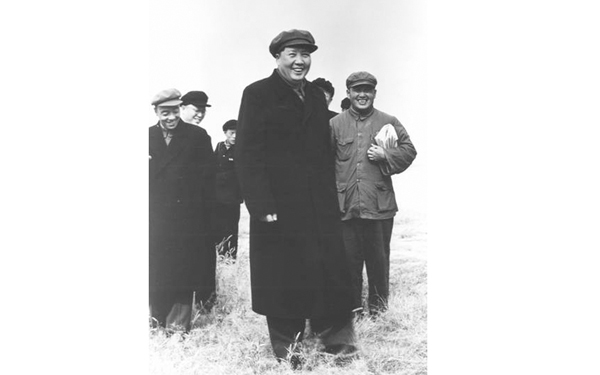
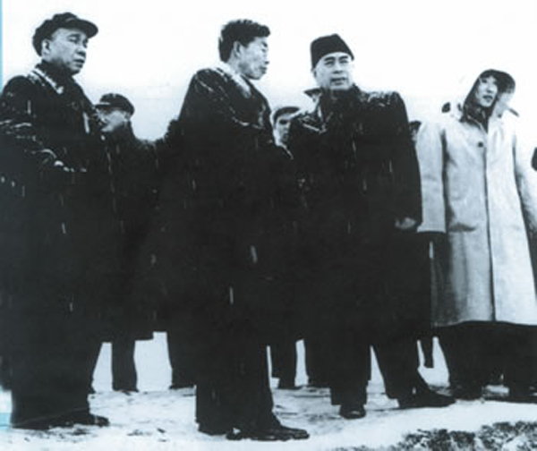

中华人民共和国的战略性工程 · 一泓清水润泽北方
南水北调工程是中华人民共和国的战略性工程，分东、中、西三条线路。东线工程起点位于江苏扬州江都水利枢纽，中线工程起点位于汉江中上游丹江口水库，受水区域为河南、河北、北京和天津。
工程方案构想始于1952年毛泽东主席视察黄河时提出。1958年3月25日，中央政治局在成都召开会议，周恩来总理根据毛泽东主席南水北调的构想和专家们的规划，提议兴建丹江口水利枢纽工程，得到会议的支持和批准。
工程规划区涉及人口4.38亿人。东、中线一期工程干线总长2899公里，沿线六省市一级配套支渠约2700公里。
2012年9月，南水北调中线工程丹江口库区移民搬迁全面完成。南水北调工程主要解决中国北方地区，尤其是黄淮海流域的水资源短缺问题。
截至2022年5月，已成为京津等40多座大中城市280多个县市区超过1.4亿人的主力水源，为沿线50多条河流实施生态补水85亿立方米，为受水区压减地下水超采量50多亿立方米。
2025年7月，南水北调东中线一期工程已经累计调水突破800亿立方米，直接受益人口达到1.85亿人。2026年1月15日，南水北调东线一期工程2025—2026年度全线调水工作正式启动。

